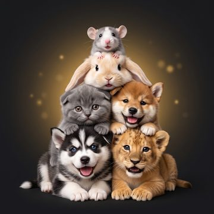
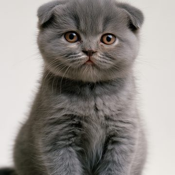
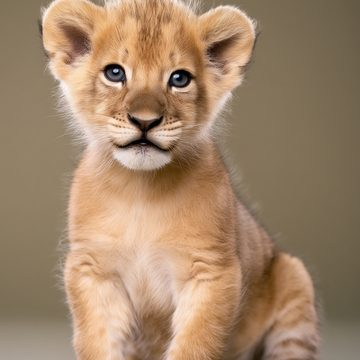
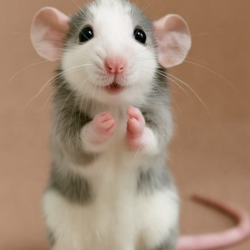
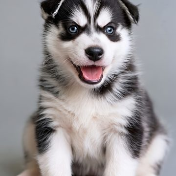
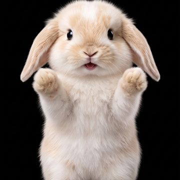
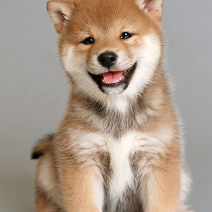
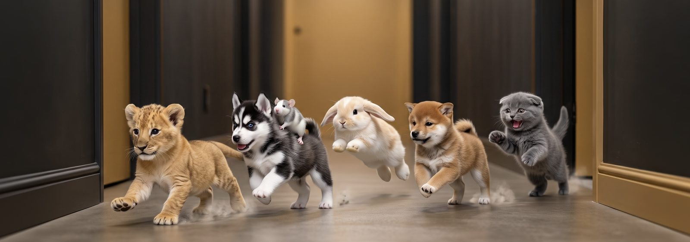

Zoolywood
Le plus petit studio de cinéma du monde 🎬
Avec Mochi, Léo, Abu, Koda, Cookie et Miso
La troupe








Le plus petit studio de cinéma du monde 🎬
Avec Mochi, Léo, Abu, Koda, Cookie et Miso





